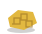
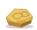

Raw materials refinement
24 same-name SVG replacements · original sizes retained
Refined metal ingots
ingot_bronze.svgCurrentRefined
ingot_copper.svgCurrentRefined
ingot_iron.svgCurrentRefined
ingot_starmetal.svgCurrentRefined
Powders and earth
raw_ash.svgCurrentRefined
raw_lime.svgCurrentRefined
raw_sand.svgCurrentRefined
raw_clay.svgCurrentRefined
raw_coal.svgCurrentRefined
Ores and crystals
raw_copper_ore.svgCurrentRefined
raw_iron_ore.svgCurrentRefined
raw_tin_ore.svgCurrentRefined
raw_starmetal_nugget.svgCurrentRefined
raw_crystal_shard.svgCurrentRefined
raw_obsidian_shard.svgCurrentRefined
Organic and processed materials
raw_beeswax.svg

CurrentRefined
raw_bone.svgCurrentRefined
raw_fiber_bundle.svgCurrentRefined
raw_hide.svgCurrentRefined
raw_oil_pot.svgCurrentRefined
raw_resin.svgCurrentRefined
Dyes
raw_dye_blue.svgCurrentRefined
raw_dye_green.svgCurrentRefined
raw_dye_red.svgCurrentRefined